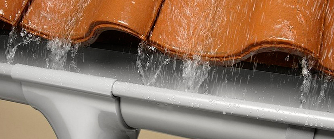

Современный рынок предлагает огромное количество водосточных систем из разных типов материалов. Рассмотрим лишь некоторые виды, имеющие широкое распространение на отечественном рынке. Как правило, они не лишены недостатков и в конце статьи мы покажем, что наилучший вариант — это оцинкованные водосточные системы.
Основные виды водостоков и материалы, используемые для производства:
- Пластик;
- Металлический водосток, защищенный полимерным покрытием. Имеется два варианта: с односторонним и двусторонним покрытием. Второй вариант считается наилучшим.
- Медный водосток.
- Водосток изготовленный с использованием цинка и титана.
- Оцинкованные водосточные системы.
Помимо материала изготовления, водосточные системы, в зависимости от сечения, делятся на круглые и квадратные. Чтобы наиболее точно оценить виды водостоков, рассмотрим их плюсы и минусы.
Пластиковые водосточные системы
К плюсам пластиковых водостоков можно отнести их цену. Пластик считается недорогим материалом, соответственно это отражается на цене водосточных систем. Все прекрасно понимают, что низкая цена и высокое качество — несовместимы. Перечислим некоторые существенные минусы:
- Пластиковые водосточные трубы часто ломаются;
- Внешний вид портится со временем. Особенно негативно на пластиковые водостоки влияют прямые солнечные лучи.
Если вам нужен недорогой водосток и срок службы не важен, то пластик в качестве материала — это ваш вариант. Но нужно учитывать, что суровый климат может быть большой проблемой для данного типа водостоков. К тому же водосточные колена и трубы должны фиксироваться с помощью дополнительных креплений, что делает монтаж слишком трудоемким.
Металлические водостоки с полимерным покрытием
Водосточные системы, покрытые слоем полимерного материала пользуются большой популярностью. Это объясняется доступной ценой, большим выбором цветов и улучшенными эксплуатационные качествами. На рынке представлено много компаний, которые изготавливают водосточные системы, покрывая металлическую поверхность слоем полиэстера. Водосточные воронки и колена соединяются с помощью специальных гофрированных элементов. К существенным недостаткам можно отнести вероятность появления коррозии на стыках водосточных колен, а также внутри труб, так как полимерное покрытие защищает водосток только снаружи. Срок эксплуатации таких водосточных систем желает оставлять лучшего.
Нанесение второго полимерного слоя значительно улучшает качество металлических водостоков. Один слой защищает водосток снаружи, а второй — внутри. Срок службы значительно увеличивается, так как риск коррозии заметно снижается. Водосточные желоба, воронки и трубы с двусторонним полимерным покрытием менее подвержены повреждениям и имеют приятный внешний вид. К минусам можно отнести высокие цены.
Водосточные системы из меди
Медь обладает высокой коррозийной стойкостью и это её главное достоинство. Медные водосточные системы могут служить очень долго. Тем не менее имеются серьезные недостатки:
- Слишком высокая стоимость водостоков;
- Из-за особенностей монтажа, работы стоят очень дорого;
- Внешний облик здания должен проектироваться под цвет меди.
Водостоки из цинк-титана
Этот вид водостоков можно отнести к очень прочным и не требующим дорогостоящего обслуживания. Стыки водосточных труб и колен достаточно герметичны. Цинк-титановые водосточные системы отлично справляются с тяжелым снегом, наледью и сосульками. Если кратко сказать о плюсах и минусах, то преимуществом является 100%-я устойчивость к коррозии, а недостатком слишком высокая цена.
Оцинкованные водостоки
Учитывая все выше перечисленные типы водостоков, можно заметить, что многие из них имеют ярко выраженные недостатки, такие как высокая цена, подверженность коррозии или плохая прочность. Выходом в этой ситуации однозначно являются оцинкованные водосточные системы, лишенные многих недостатков своих конкурентов.
Плюсы оцинкованных водосточных систем:
- Низкая стоимость;
- превосходные антикоррозийные свойства;
- внешний вид подходит к любому типу зданий;
- возможно применение в наиболее суровых климатических условиях.
Водосточные системы Алматы цена
Источник: vodostoki.ru